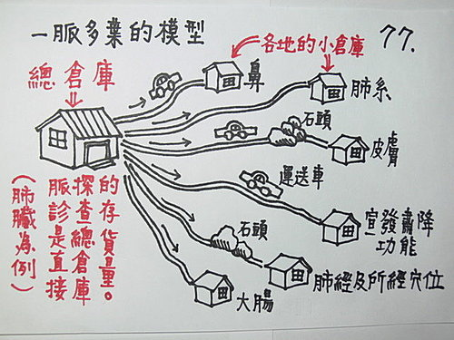

問答錄 155：內經經絡篇中所說的「是動病」、「所生病」所指有何不同？
作者：陳建元
請教 falo 老師，近日自習經絡學之書，其中論及經絡有「是動病」及「所生病」等症狀分別，然遍查網路，對於此二之解釋，各有定見，但皆不詳，仍不明其意，有言是動病為氣病，所生病為血病；另有言是動為表症，所生病為裏證，莫衷如是。
請教老師的是到底「是動病」與「所生病」所指為何？其分類為診斷之便或是為治療之準則？又其是否可與脈診呼應以之為體查病機之依歸呢？
答：各經都一樣，我以肺經為例來說明；我先把這段《內經・肺經》經文貼在下面：
「肺手太陰之脈，起於中焦，下絡大腸，還循胃口，上膈，屬肺，從肺系橫出腋下，下循臑內，行少陰心主之前，下肘中，循臂內上骨下廉，入寸口，上魚，循魚際，出大指之端。其支者，從腕後直出次指內廉，出其端。
是動則病肺脹滿膨膨而喘欬，缺盆中痛，甚則交兩手而瞀，此為臂厥。是主肺所生病者，欬，上氣，喘渴，煩心，胸滿，臑臂內前廉痛厥，掌中熱。氣盛有餘，則肩背痛，風寒，汗出中風，小便數而欠。氣虛則肩背痛寒，少氣不足以息，溺色變。
為此諸病，盛則寫之，虛則補之，熱則疾之，寒則留之，陷下則灸之，不盛不虛，以經取之。盛者，寸口大三倍於人迎，虛者，則寸口反小於人迎也。」
然後再把我們脈學中第 56 條、56.2 條的一脈多葉模型圖〈圖77〉貼在這邊：

你看我們一脈多葉的模型中，是以中醫臟象學中的肺系統為總倉庫（左側），而一脈多葉（右側）的小倉庫有6條。
是動則病（是動病）→→→是指小倉庫由上算下來第5條，即肺經所循之處出問題時，會出現的症狀及疾病。
是主肺所生病者（所生病）→→→就像文字上面的意義，是指肺系統總倉庫出問題時，會出現的症狀及疾病（即上述）6條小倉庫加起來的總和。
古代的臟象學模型，是以肺系統總倉庫為中心（不是以肺經為中心），肺經只是肺臟所管轄的一個分部和肺臟氣血所循環的一條路線（譬如上述圖中第3條路徑的肺主皮毛，就不在肺經的概念中），而肺經上的巡行經氣，則是由肺臟氣血總倉庫所供給。
以上的系統，皆可和脈診相呼應而互相配套，於右寸上可診得肺臟總倉庫的氣血資料，作為治療、查病機的工具和依據。
另外，對於這些資料，歷代大都解釋成是動病為氣病，所生病為血病；另有說是動為表症，所生病為裏證；或說是動病類似現代所謂功能上的症狀，所生病類似現代所謂器質上的疾病，這是因為思維被《難經》綁住，遷就22難的解釋內容，就像國王的新衣，沒人敢直指真相，看得懂的地方就解釋，看不懂的地方也隨著古人瞎說兩句敷衍過去以為交代，自古陋習難改。多對照幾條經絡原文，就會發現事實，譬如肺所生病的肺欬，上氣，喘渴，煩心，胸滿，臑臂內前廉痛厥……，這些解釋成一定是血病、裏證、器質上的病，很明顯說不過去。
相反的，以〈圖77〉的一脈多葉模型來看，我們可以知道各地的小倉庫，還有其他的疾病和症狀，如大便乾、排便乏力、皮膚癢、傷寒論中風寒餘邪的如蟲在皮中、鼻鼽、鼻塞、鼻過敏、咽腫、喉痛、喉痺‥‥‥等，都可以再加入肺所生病的項目之中。
【引用請先來信告知徵求同意，若有涉及販售營利等商業行為，版權所有拷貝盜用必究。】
【藥王脈學講壇】http://blog.xuite.net/drjychen/twblog